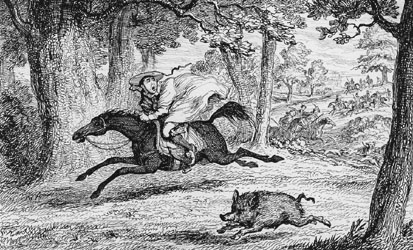

|
|
||||
|
|
Home | Corson Collection | Biography | Works | Image Collection | Recent Publications | Portraits | Correspondence | Forthcoming Events | Links | E-Texts | Contact Quentin DurwardFirst Edition, First Impression: Quentin Durward. By the Author of "Waverley", "Peveril of the Peak," &c. In Three Volumes. Vol. I. (II-III). Edinburgh: Printed for Archibald Constable and Co. And Hurst, Robinson and Co., London, 1823. Composition | Sources | Synopsis | Reception | Links Composition
Scott's idea may have been sparked by the recent return from France of his friend and fellow Advocate James Skene of Rubislaw, a talented amateur artist. Skene had kept a detailed journal of his tour with sketches of historical buildings and scenery. The journal was placed at Scott's disposition during the composition of Quentin Durward and exerted a demonstrable influence on a number of the descriptive passages. In the aftermath of the Revolutionary and Napoleonic Wars, Scott (whose wife was French) realized that there would be great public interest in the reign of Louis XI which saw the fall of feudal France and the emergence of the first modern centralized nation-state. The decision to make the hero a Scottish archer may have been influenced by Scott's own reinvention of the Company of Archers as the bodyguard for George IV during his visit to Edinburgh in August 1822. Scott must have started writing Quentin Durward shortly after his letter to Morritt, as a letter of 23 January to Archibald Constable reveals that he was making good progress. Indeed, the whole novel was written at exceptional speed. The first two volumes were at the printers by 4 March. Progress slowed a little during late March and early April as Scott decided to reduce the historical scope of the novel and to keep material in reserve which would eventually be used six years later in Anne of Geierstein. Scott was also deeply affected by the death in March of his brother Tom, leaving him, at the age of 52, as the only surviving offspring of a family of twelve boys and girls. The note to James Ballantyne accompanying the final leaves of the manuscript is unfortunately undated but must have been sent before the end of April 1823. Ballantyne, however, prompted Scott to rework the conclusion of the novel which he felt was too abrupt. The revised text was complete by 3 May. Unusually, however, the title was kept secret until the printing was complete, with only chapter titles provided in the running heads. This was to prevent pirate editions being printed from proof-sheets as had happened with Peveril of the Peak in the United States. Throughout its composition, Scott privately referred to the novel as Durward. Constable, however, persuaded Scott to use his hero's full name which he felt felicitously echoed Guy Mannering. The new novel was published in London on 17 May 1823 and in Edinburgh on 19 May, a mere fourth months after the appearance of Peveril of the Peak. SourcesQuentin Durward portrays a power-struggle between the Duchy of Burgundy and the Holy Roman Empire for possession of the thriving merchant city of Liège in modern-day Belgium. It is set, however, in the wider context of Louis XI's efforts to establish the French monarchy as a centralizing force in a modern nation-state. The collapse of powerful feudal dominions sees the emergence of new trading classes but also the emergence of predatory local barons and decline of the spirit of chivalry. By far Scott's most important historical source were the Mémoires of Philippe de Commynes which are generally regarded as the first example of modern analytical history. Commynes had acted as a councillor to both Louis XI of France and Charles the Bold, Duke of Burgundy. His portrait of the former, which strongly influenced Scott's own, is notably more balanced than those offered by rival historians and chroniclers. Scott also drew on the on collection of French historical memoirs edited by Claude Bernard Petitot but was otherwise more interested in obtaining topographical works, maps, and gazetteers to supply the place of first-hand knowledge of the regions portrayed. In this he received much valuable aid from Archibald Constable's son David who was curator of the Advocates' Library.  SynopsisThe plot centres on the rivalry between Louis XI of France and Charles the Bold, Duke of Burgundy. Louis incites the citizens of Liège to revolt against Charles, and, under the command of Louis's ally, William De La Marck, they seize and murder Charles's brother-in-law, the Bishop of Liège. At the time of the murder Louis is at Charles's camp at Peronne, hoping to fool him with a false display of friendship. Charles, though, sees through his pretence, accuses him of instigating the uprising, and has him imprisoned. Louis's superior coolness of mind permits him to allay Charles's suspicions and to regain his liberty. In a sub-plot, the Burgundian heiress Isabelle de Croye takes refuge at Louis's court when Charles attempts to give her hand in marriage to his odious favourite Campo-Basso. Louis, in turn, resolves to give her in marriage to de la Marck, and sends her to Flanders under the pretence of placing her under the protection of the Bishop of Liège. She is guarded on her journey by Quentin Durward, an archer, who has left behind poverty in Scotland to join Louis's Scottish Guard. Quentin prevents the intended treachery and earns Isabelle's love. Charles, though, promises her in marriage to the Duke of Orleans (heir to the French crown) but she refuses, and, in anger, the Duke promises her to whoever brings him the head of De La Marck. This Quentin does with the help of his uncle, Ludovic Lesley, and wins Isabelle's hand.
ReceptionScott completed Quentin Durward within five months of finishing Peveril of the Peak, and readers had difficulty believing that the 'Author of Waverley' could have produced another novel quite so quickly. It was perhaps for this reason that sales were initially slow despite Quentin Durward being Scott's most critically acclaimed novel since Ivanhoe. Scott's expressed his disappointment in a letter: 'If it had been a bad book I would not have cared, but we must think what is to be done.' The slow sales of Quentin Durward in England stood in stark contrast to its reception in France, where it caused a similar sensation to Waverley in Scotland and Ivanhoe in England. French women adopted the fashion of wearing gowns in the Stuart tartan, and Scott became the talk of Paris. The vogue for the novel spread to Italy then swept across Europe, eventually awakening renewed interest in Britain, where demand soon outstripped supply. Critical reaction was mixed. The Edinburgh Magazine judged it in point of story 'the most perfect of the Author's performances', and the British Magazine felt it displayed 'more talent than any other of the author's works'. For the Scotsman, however, it lacked the touches of genius which the poorest of its predecessors possessed. The European Magazine argued that the characters and situations were repeated from earlier novels, and the Literary Chronicle declared it the worst novel to date by the 'Author of Waverley'. Links
Last updated: 19-Dec-2011 |
|||